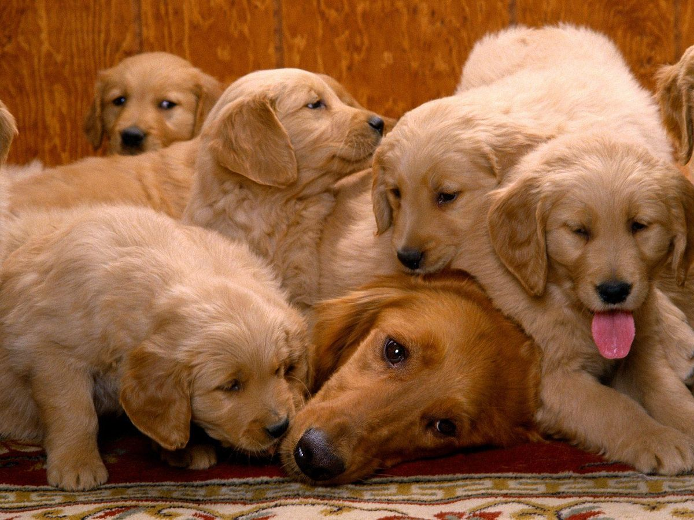
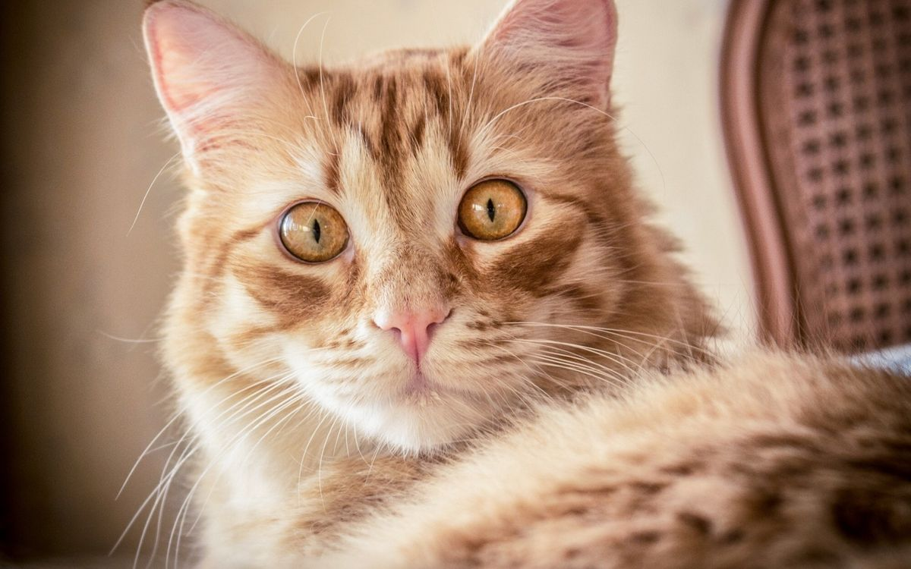
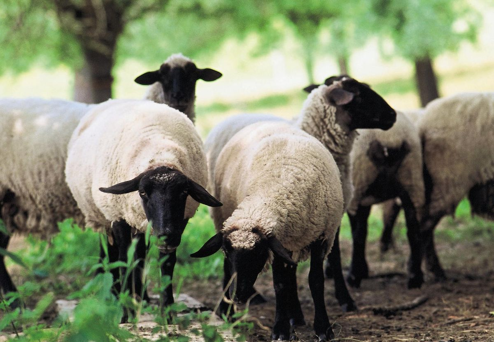
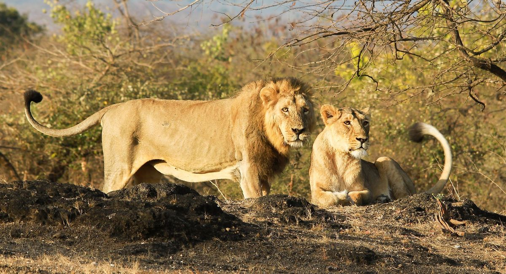
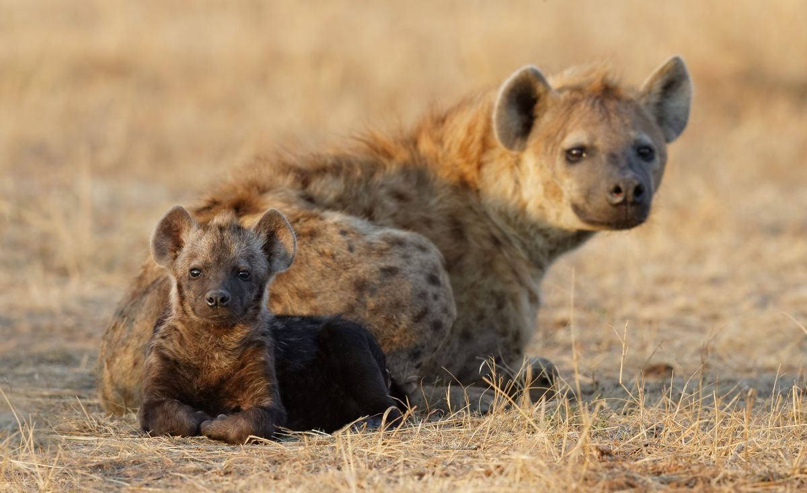
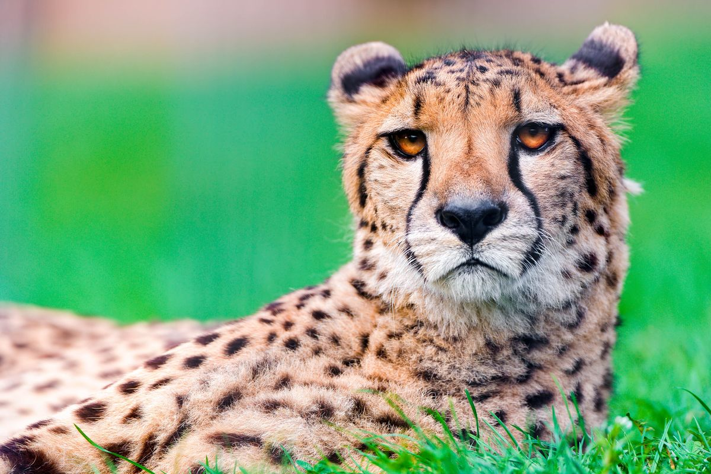

Animals are categorised into two:
These are animals that have been tamed and kept by humans as a work animal, food source, or pet. They include :
Now, lets take a look at some domesticated animals
Domestic dogs are mostly kept as pets, though many breeds are capable of surviving on their own, whether it's in a forest or on city streets.
Domestic cats are characterised by supple low-slung bodies, finely molded heads, long tails that aid in balance, and specialised teeth and claws that adapt them admirably to a life of active hunting.
Sheep or domestic sheep (Ovis aries) are domesticated, ruminant mammals typically kept as livestock.
These are mammals, birds, fish, or other creature of a wild nature endowed with sensation and the power of voluntary motion. Examples of wild animals are:
The lion is a large cat of the genus Panthera.It has a mascular, broad-chested body, short, rounded head, round ears, and a hairy tuft at the end of its tail.
There are three hyena species- spotted,brown and striped.Spotted hyenas are the largest of the three. They are fairly large in build and have relatively short torsos with lower hindquarters, and slopping backs.They have excellent night time vision and hearing. Hyenas have long forelegs and a powerful neck and shoulders for dismemberingand carrying prey
A Cheetah is a arge cat and native to Africa and central Iran. It is the fastest land animal, estimated to be capable of running at 80km/h to 128km/h.
